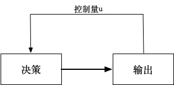
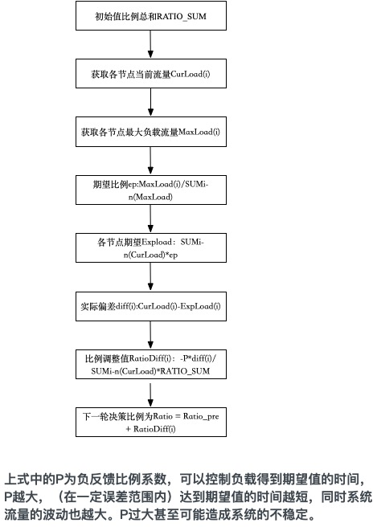
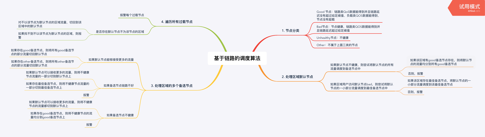
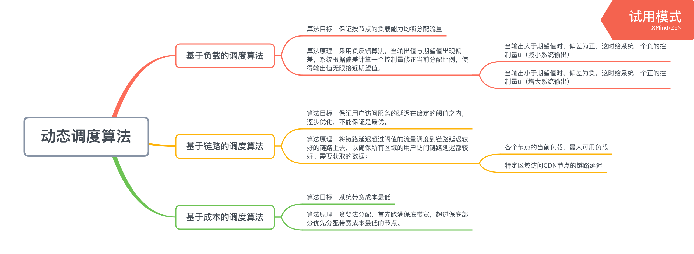

常见的动态调度算法
常见的几种cdn动态调度算法
基于全局流量的调度算法
对于全局流量调度系统而言，设计目标有两个：
- 提升用户体验
- 节约系统成本
这两个目标本身都包含很多的方面，但提取其最核心的要求，分别对应
- 降低用户访问CDN节点的延迟
- 降低CDN节点的带宽成本
基于负载的调度算法
目标：特定区域的用户访问一组服务节点，保证按节点的负载能力均衡分配。
原理：基于负反馈算法，当输出值与期望值出现偏差，系统给出一个控制量对偏差修正，使得输出值无限接近期望值

- 当输出大于期望值时，偏差为正，这时给系统一个负的控制量u（减小系统输出）
- 当输出小于期望值时，偏差为负，这时给系统一个正的控制量u（增大系统输出）
应用到基于负载的调度算法中来，当分配给某个节点的流量同其负载能力相比偏小时（偏差为负），我们应该增大分配给该节点的流量，反之，则减小分配给该节点的流量。
实现：
- 获取实时QoS数据
- 根据当前流量和最大负载流量值计算负反馈因子
- 根据负反馈因子计算流量分配策略

基于链路的调度算法
目标：保证用户访问服务的延迟在给定的阈值之内，逐步优化，不能保证是最优。
原理：将链路延迟超过阈值的流量调度到链路延迟较好的链路上去，以确保所有区域的用户访问链路延迟都较好。需要获取的数据：
- 各个节点的当前负载、最大可用负载
- 特定区域访问CDN节点的链路延迟
目前链路探测的最主要数据有ping time和ping命令的丢包率，而区域和节点之间的链路信息则是通过综合部署在指定区域的所有Aliprobe探测客户端获取的访问指定节点的链路信息统计、综合得到的。
实现：

基于成本的调度算法
目标：系统带宽成本最低
原理：贪婪法分配，首先跑满保底带宽，超过保底部分优先分配带宽成本最低的节点。
小结
